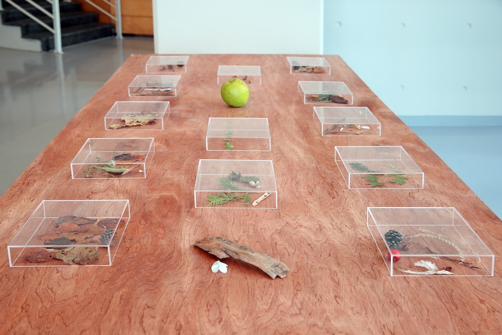
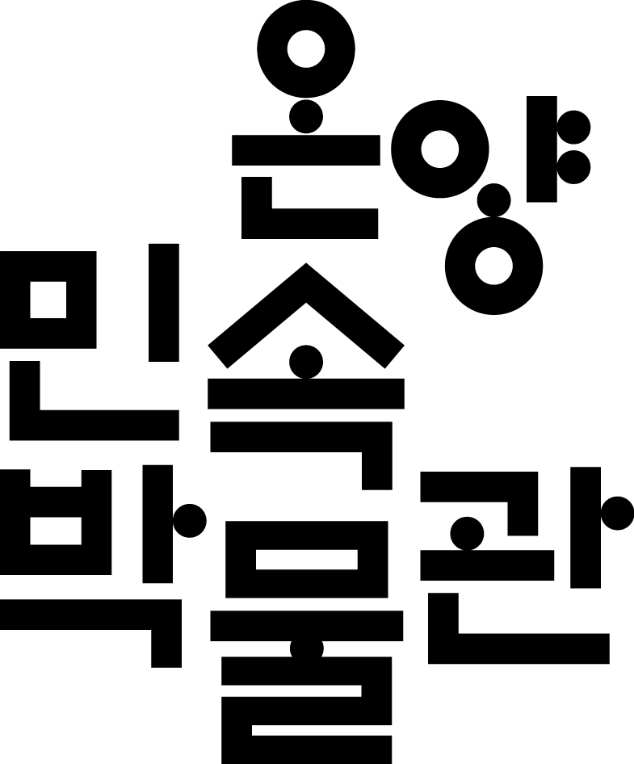
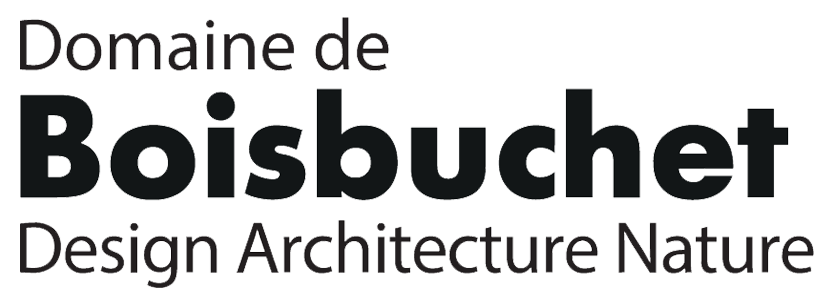
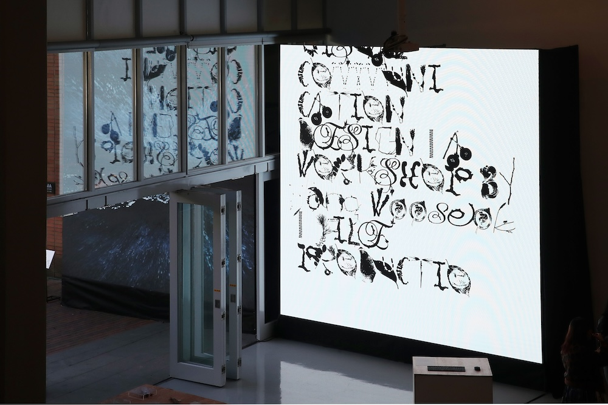
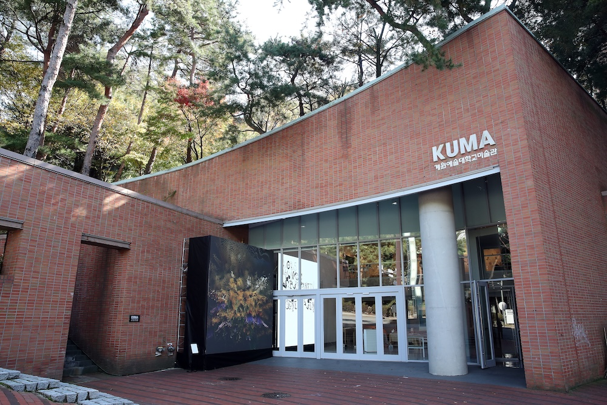

EX-KUMA는 계원예술대학교 KUMA 미술관의 역할을 캠퍼스 전역으로 확장하는 글로벌 프로젝트입니다. 캠퍼스를 하나의 “살아있는 미술관(Living Museum)”으로 전환하여, 교육·전시·연구가 긴밀히 연결된 통합 창의 플랫폼을 구축하는 것을 목표로 합니다. EX-KUMA를 통해 계원예대는 다음을 지향합니다.
- — 캠퍼스 전체를 예술 실험실로 전환하여 학생, 교수, 국내외 예술가가 함께 작업하는 환경 조성
- — 국제적 수준의 새로운 교육-전시-큐레이션 모델을 시험하는 캠퍼스-뮤지엄 융합 프로그램
- — 계원의 교육·창작 성과를 기반으로 한 협업 전시, 미디어 콘텐츠 제작 및 글로벌 공유
- — 전 세계 대학, 미술관, 문화기관과의 지속 가능한 네트워크를 구축하여 공동 전시, 레지던시, 연구를 추진
EX-KUMA는 다음과 같은 협력에 관심 있는 해외 파트너를 찾고 있습니다.
- — 공동 기획 전시, 교류·순회 전시
- — 작가·큐레이터 교환 및 레지던시 프로그램
- — 캠퍼스를 확장된 미술관으로 활용하는 공동 교육·연구 프로젝트
이를 통해 국제 예술 교류와 창의 인재 양성을 위한 장기적이고 지속 가능한 생태계를 함께 만들어가고자 합니다.
나투라 A–Z
시각디자인전공의 최슬기 교수와 장우석 마스터, 그리고 학생들이 숲에서 수집한 재료들을 바탕으로 그 형태적 특성을 발전시켜, '나투라(Natoorah) A-Z'라는 새로운 타이포그래피 시스템을 설계했습니다.
참여
고수경, 김승엽, 김헵시바, 문동혁, 박유라, 송명규, 송인우, 안윤선, 유이수, 장수미, 전희진, 정다원, 주준모, 홍은솔
보이지 않는 숲
전시콘텐츠디자인전공의 윤효진 교수와 박지희 마스터, 그리고 학생들이 참여한 '보이지 않는 숲'은 숲속의 미생물을 시각적 언어로 번역해낸 프로젝트입니다.
참여
김민지, 김지수, 박도현, 윤나리, 이준서, 전범수, 정수빈, 진솔, 전화연
숲의 잔상
애니메이션전공의 김용원 교수가 이끈 ‘AI 크리에이티브 프로덕션 워크숍’은 인공지능의 시선으로 숲을 관찰하고 기록한 영상 작업을 통해, 인간의 관찰과 인공적 지각 사이의 간극을 탐구합니다.
참여
권준혁, 김한나, 백승준, 이세용, 이예린, 원준서, 정기주, 최진혁



